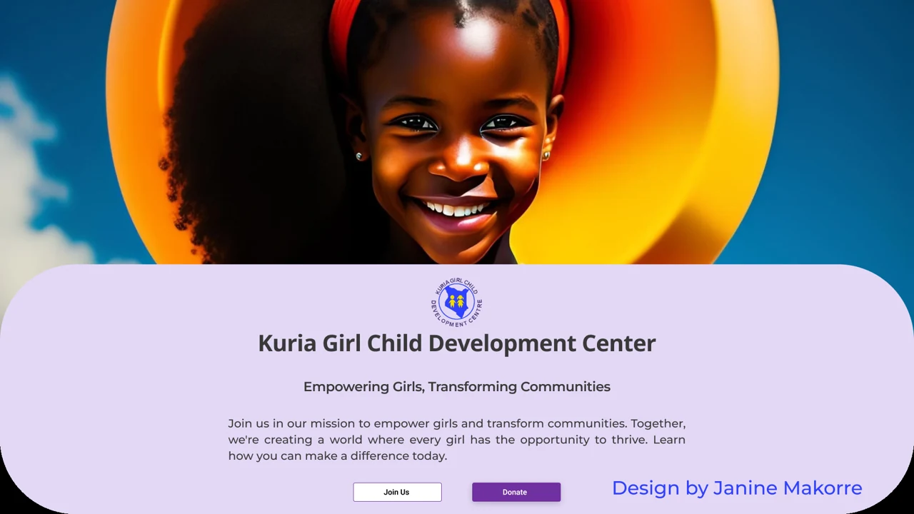

Kuria Girl Child
Website Redesign · Technical Support · Education & Mentorship
I redesigned the Kuria Girl Child website and have continued supporting the organization with its technical needs and mentorship activities.
I also introduced learners to Oppia through sessions covering Mathematics, Financial Literacy, Science, and Languages.
For me, this work brings together two things I care deeply about: helping girls access opportunities and making technology genuinely useful to the communities it serves.
Status: Ongoing partnership
View Figma Prototype (opens in a new tab)